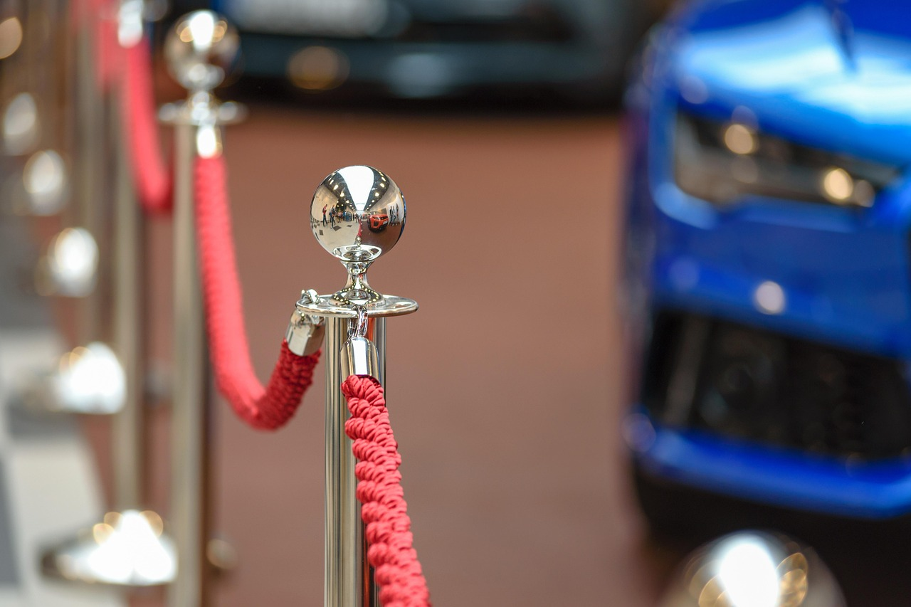
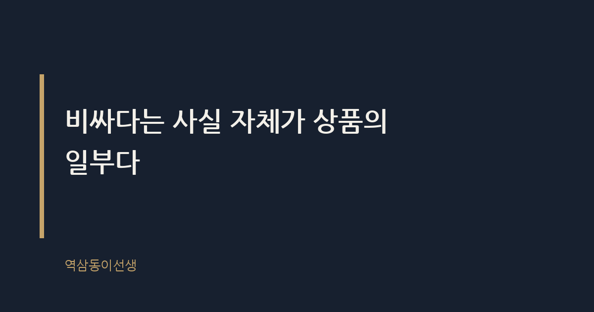
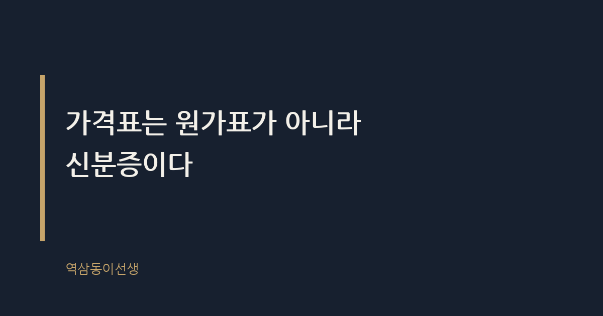

주제 명품 브랜드가 가격을 계속 올리는 이유 (evergreen / brand)
제목 후보
메타 설명 명품 브랜드가 매년 가격을 올리는 진짜 이유를 백화점 오픈런 장면과 베블런재 개념으로 설명한다.
라벨 명품가격인상, 샤넬가격인상, 에르메스가격, 베블런효과, 명품오픈런, 리셀테크, 샤넬클래식백가격, 롤렉스가격인상이유, 명품브랜드마케팅전략, 럭셔리브랜드가격정책
실용 자산 없음 (에세이형) — 브랜드 전략을 읽는 에세이형 주제라 양식이나 표를 넣으면 글의 결이 깨진다. 공감과 통찰로 읽히게 두는 편이 맞다.
발행 전 팩트체크
이미지 (Blogger 편집기에 드래그해 넣으세요)



신세계 강남점 명품관 앞을 지나는데 아침 아홉 시인데도 줄이 길었다. 셔터가 올라가기도 전에 서른 명 넘게 서 있었다. 다음 날 뉴스를 보니 샤넬이 가격을 또 올린다는 소문이 돌았던 거였다. 어제보다 비싸질 걸 알면서, 아니 비싸질 걸 알기 때문에 사람들은 전날 밤부터 그 자리에 서 있었다.
명품 브랜드가 가격을 계속 올리는 이유는 단순하다. 비싸야 팔리기 때문이다. 원가 상승이나 환율 때문이라는 설명은 보도자료용이고, 실제로 가격은 수요를 줄이는 장치가 아니라 수요를 만드는 장치로 쓰인다.
샤넬 클래식 플랩백은 2021년 한 해에만 여러 차례 가격을 올린 것으로 알려졌다. 한 번 오를 때마다 백만 원 안팎씩 뛰었고, 소비자들은 인상 발표가 나기도 전에 소문만 믿고 매장으로 달려갔다. 에르메스 버킨백은 공식 가격표가 있어도 매장에서 바로 살 수 없는 구조라 가격 인상 자체가 뉴스가 된 지 오래다. 롤렉스도 거의 매년 초 가격을 조정하는 것으로 알려졌는데, 공식적으로는 원자재비와 환율 변동을 이유로 든다.
공통점이 있다. 인상 폭이 소비자물가 상승률보다 훨씬 크다는 점이다. 브랜드가 밝히는 공식 이유는 원자재비, 인건비, 환율이다. 틀린 말은 아니다. 다만 그것만으로는 왜 하필 그 브랜드만, 그 타이밍에, 그 폭으로 올리는지 설명이 안 된다. 비슷한 원자재를 쓰는 중저가 브랜드는 같은 시기에 가격을 내리기도 한다.
흥미로운 건 가격 인상 보도가 나올 때마다 업계 관계자 인터뷰에 꼭 등장하는 문장이 있다는 점이다. "원가 부담이 크지만 품질을 유지하기 위해 불가피했다"는 식의 멘트다. 십 년 가까이 거의 똑같은 문장이 반복되는 걸 보면, 이건 설명이라기보다 의례에 가깝다. 가격을 올릴 때마다 꺼내는 정해진 대사 같은 것이다.
베블런재란 가격이 오를수록 수요가 함께 늘어나는 재화를 말한다. 19세기 경제학자 소스타인 베블런이 상류층의 과시적 소비를 설명하며 쓴 개념인데, 지금의 명품 시장을 그대로 설명한다. 일반 상품은 가격이 오르면 사는 사람이 줄어든다. 명품은 거꾸로다. 가격이 오르는 순간 '지금 아니면 더 비싸진다'는 조바심과 '이 정도는 아무나 못 산다'는 과시욕이 동시에 작동한다.
브랜드 쪽에서 일하던 시절, 가격 인상 회의에 들어가 본 적이 있다. 거기서 가장 많이 나온 질문은 "얼마나 올려야 안 팔릴까"가 아니라 "얼마나 올려야 더 팔릴까"였다. 가격 저항선을 찾는 게 아니라 가격 상승이 만드는 희소성의 신호를 어디까지 키울 수 있는지를 계산하는 자리였다. 당시엔 낯설었는데, 지금 돌아보면 명품 비즈니스의 본질이 그 회의실 안에 다 있었다.
그 회의에서 나온 또 다른 말이 기억에 남는다. "가격을 내려서 매출이 늘면 그건 우리 브랜드가 아니다." 매출과 이익보다 더 중요하게 다룬 건 그 브랜드를 사는 사람의 '급'이었다. 살 수 있는 사람의 폭을 좁히는 게 목표였고, 가격은 그 폭을 조절하는 손잡이였다.
오픈런 줄을 몇 번 지켜본 적이 있다. 평일 아침인데도 줄 선 사람들의 연령대가 생각보다 넓었다. 예순을 넘긴 어르신부터 스무 살 안팎으로 보이는 대학생까지 섞여 있었다. 흥미로운 건 줄 선 이유가 저마다 달랐다는 점이다. 누군가는 본인이 쓸 가방을 사러 왔고, 누군가는 되팔 목적으로 줄을 섰다. 명품 리셀이 하나의 부업처럼 자리 잡으면서, 매장 앞 줄은 소비자와 '전문 구매 대행'이 뒤섞인 풍경이 됐다.
직원들 이야기를 들어보면 가격 인상 발표 직전에는 직원 본인들도 구매 문의 전화를 감당 못 할 정도로 받는다고 한다. 매장은 혼란스럽지만 본사 입장에서는 그 혼란 자체가 성공의 증거다. 줄이 길어질수록, 전화가 폭주할수록 "역시 이 브랜드는 다르다"는 메시지가 강해진다. 매장의 혼란과 브랜드의 성공이 같은 방향을 보고 있다는 게 이 구조의 아이러니다.
줄 서 있는 사람들과 몇 마디 나눠본 적도 있다. 한 분은 "어차피 살 거, 조금이라도 쌀 때 사는 거다"라고 했고, 바로 뒷사람은 "이건 투자다, 가방이 아니다"라고 했다. 소비의 언어는 달랐지만 둘 다 결국 가격이 오른다는 전제를 의심하지 않았다. 그 전제 자체가 브랜드가 오랜 시간 공들여 심어 놓은 것이다.
명품 가격 인상이란 단순한 원가 상승분의 전가가 아니라 브랜드 가치를 재설계하는 작업이다. 가격을 올리면 세 가지가 동시에 일어난다. 첫째, 신규 구매층의 진입 장벽이 높아져서 기존 구매자의 소속감이 강화된다. 둘째, 리세일 시장에서 중고가도 함께 올라가면서 "이 가방은 사면 자산"이라는 인식이 강해진다. 셋째, 매장 앞 줄이 길어지면서 그 자체가 무료 홍보가 된다. 줄 선 사람들의 사진이 SNS에 퍼지는 순간 브랜드는 광고비를 한 푼도 안 쓰고도 '다들 갖고 싶어 하는 물건'이라는 메시지를 뿌린다.
이 구조를 알면 가격 인상 뉴스가 다르게 보인다. 브랜드 입장에서 가격 인상은 비용 보전이 아니라 포지셔닝 작업이다. 지난 분기 실적이 좋았는데도 가격을 또 올리는 이유가 여기 있다. 돈이 모자라서가 아니라, 가격이 곧 브랜드의 좌표이기 때문이다.
같은 소비재인데도 명품과 일반 패션 브랜드는 가격을 대하는 태도가 정반대다. 일반 브랜드는 재고가 쌓이면 가격을 내려서 소진한다. 명품은 재고가 쌓여도 가격을 내리지 않고, 오히려 일정 시즌이 지난 상품은 소각하거나 아웃렛으로도 잘 내보내지 않는다는 이야기가 업계에 돌 정도다. 할인된 가격표가 붙는 순간 그 브랜드의 좌표가 흔들린다고 보기 때문이다.
이 차이는 소비자가 그 브랜드에 기대하는 것이 다르기 때문에 생긴다. 일반 브랜드를 사는 사람은 가성비를 기대하고, 명품을 사는 사람은 희소성을 기대한다. 희소성을 파는 브랜드가 할인을 하는 순간 그 상품을 산 기존 고객은 배신감을 느낀다. 그래서 명품 브랜드는 세일 대신 가격 인상이라는, 얼핏 보면 거꾸로 된 카드를 쓴다.
인상 발표가 늘 예고 없이 이뤄지는 이유는 사전 공지가 오히려 '지금 아니면 못 산다'는 긴장을 깨기 때문이다. 한 달 전에 "다음 달 1일부터 10% 인상합니다"라고 공지하면 소비자는 느긋하게 계획을 세운다. 반면 소문만 돌다가 어느 날 아침 갑자기 가격표가 바뀌면, 구매는 이성적 계획이 아니라 즉흥적 행동이 된다. 백화점 앞 오픈런 줄은 그 즉흥성의 결과물이다.
흥미로운 건 브랜드들이 이 패턴을 거의 매년 반복한다는 점이다. 소비자도 이제 학습이 됐다. "또 올린대"라는 소문이 돌면 사실 여부를 확인하기도 전에 움직인다. 학습된 조바심이 브랜드의 자산이 된 셈이다. 가격 인상을 반복할수록 다음 인상에 대한 기대와 불안도 함께 쌓이고, 그 감정이 바로 매출로 연결된다.
스무 살 대학생인 딸 써니와 명품 이야기를 한 적이 있다. 또래 친구들 사이에서는 새 제품을 사는 것보다 빈티지나 중고 거래 플랫폼에서 '한정판'을 찾는 게 더 멋있는 일로 통한다고 했다. 새것을 사는 세대와 중고를 뒤지는 세대, 방식은 다른데 속을 들여다보면 똑같다. "남들이 쉽게 못 구하는 걸 내가 가졌다"는 감각을 확인하고 싶어 한다는 점에서다.
브랜드 입장에서는 이 흐름도 나쁠 게 없다. 중고 시장에서 가격이 떨어지지 않고 오히려 오르는 걸 보여주면, 신제품 가격 인상은 더 정당해 보인다. "사두면 오히려 돈이 된다"는 인식이 퍼질수록, 소비자는 가격표 앞에서 지갑 열기를 덜 주저하게 된다. 세대가 바뀌어도 가격이 작동하는 방식은 크게 달라지지 않았다.
가격표는 원가표가 아니라 신분증이다. 숫자가 올라갈 때마다 브랜드는 "우리 물건을 아무나 사지 못하게 만들겠다"는 선언을 하는 셈이고, 그 선언에 동의하는 사람일수록 더 기꺼이 지갑을 연다. 씁쓸하면서도 꽤 정교한 설계다. 소비자는 비싸져서 화를 내면서도 줄을 서고, 브랜드는 그 줄을 다음 인상의 근거로 쓴다.
명품을 사지 말라는 이야기가 아니다. 다만 가격표 앞에서 '내가 원해서 사는 건지, 못 살까 봐 사는 건지'는 한 번쯤 구분해볼 만하다. 그 구분이 되는 사람이 결국 소비에 휘둘리지 않고 오래간다.
Q. 가격이 오른다는 소문만 듣고 서둘러 산 적, 저만 있는 건 아니죠?